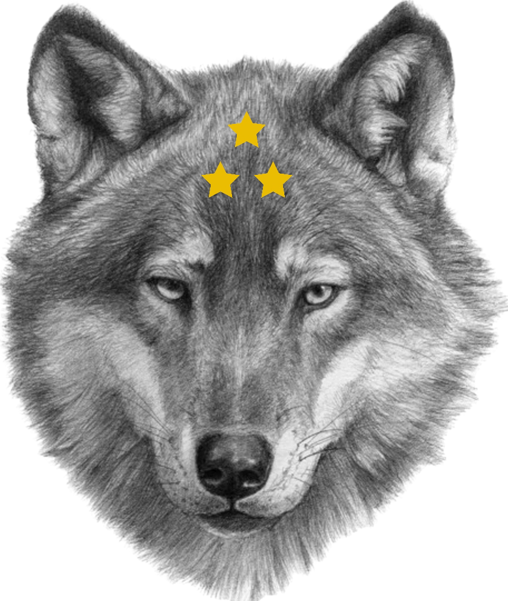

![]()
![]()
A story told
On the path she has taken many times before from the Twinge Shrine of Knowledge to the river that cuts through the mountain, M finds a young drow crying. It’s usual to see a drow child this far from the main city since the shrine sets on very high cliff that over looks Twinge’s east wall. Approaching the sapling, she speaks, Why does this one cry? Did you hurt oneself? You should know being young, you should still your emotions or you could be spirited away by outsider’s honeyed words. Your parents wouldn’t want to lose you to such an occurrence.
You should be rejoicing, everyone has to take the rites when they become of age. The rites were created by drow and wood elves to test the skills and help young ones discover what they are best at and what they can become to help strengthen their kind. One day you will be old enough to do the rites and if you refuse you be looked down upon and have miserable to time tending to mundane things in the kingdom. You shouldn't wish that upon yourself, extreme impoverished life those unfortunate elves live.
I don’t want him to leave, i want him to stay and be safe from the Sun. I heard rumors that Sun tempts drow like us with promises of treasures and happiness to only swallow them up and leave nothing behind.
That may be true the Sun tempts, but we Drow are only see one aspect when are young. The aspect of darkness but we all need to experience the light as well to become whole. You will never know what you are truly compatible of becoming if you don’t experience both sides. You could be the next fame captain of a ship or a pioneer of untold magicks. One shouldn’t live in fear of the unknown because we are all a product of the unknown that our ancestors once feared.
I don’t understand that we are a product of the unknown.
Come child, accompany back to the shrine and I will tell you the history of Drow that doesn’t get told often these days in your learning. Hopefully at the end of it you will be inspired to achieve great things and may be honored to be documented into our shrine of ancestors.
The Twins

Long time ago, in a vast forest located to the far east there was and still is kingdom of wood elves. This kingdom is called Glimmers of Sequoia. | aniima - hilli|. Glimmers was the capital and name of the kingdom. It still hidden from most of the known world, only a select few know how to arrive there safely. You see the forests is filled with thick and tall sequoia trees which is hard to see through the trees from above. As well on the ground elves have a lot of mystify magic runes spread out around the forests to lead travelers away from their location. Glimmers received its name from pinhole amount of light that comes through the leaves from the trees which gives have shiny glimmer. These elves were gentle else they only care about the welfare of nature that surrounds them. They chose to do some bartering with humans and others here and there but didn’t want to participate in their many wars. As long as this area and the smaller villages spread out around the continent they didn’t come to arms but just watched from afar. The kingdom was full of adept druids and archers. The most upper class of archers became arcane archers at some point in their training. Nature is cherished above all, which means everything that is killed or cut down all of it is used for a purpose one way or another. King Vrinn was the ruler of this land. He was just and honest man which every citizen adored. He recently started negotiations with a buddy populous called Llandry, in hopes to pave way for more financial stability and new discoveries. Llandry was made up of humans and other elven brethren, so it was sound judgement to start talks about alliance of some sort. King Vrinn sired to twins Dresgar and Llelena. Unfortunately after settling Llandry alliance the King Vrinn fell ill and passed away. The kingdom was mournful but it also started chaos in the royal court. King failed to write down who his successor will be from his twins.
Dresgar, the youngest born, was a medium but sturdy male. His flaw to some is his outspoken aggronance of wanting to expand out the kingdom beyond the cloak nature. He believes more land they reclaim from the others more nature can be preserved. There were murmurs through the high houses that he actually set a plot to kill his father in this untimely manner, believing if push comes to shove the best his sibling in combat. What he lacks in strategy he excels in being charismatic enough to pull people together. As well he not too shabby with his swordsmanship.
Sweet Llelena, the oldest of the siblings. She is soft spoken and very studious elven woman. You believe being the oldest she would by default the next rightful king. Unfortunately, the high houses don't want her to succeed because she would be hard one to manipulate on the throne. She doesn't display her true intentions to most of what she desires and person you how has no desire can not be swayed easily. Llelena is no mere sheep like people believe her to be. She very adept in swordplay but has a more keen eye towards archery. In fact her archery skills seems to rival even the elite bowsman who devote their lives to the craft. She is all about necessary order and living out what her father set in front of them. Never ending peace and discovery.
Needless to say succession was a split vote between the high houses. Which is what Dresgar wanted. He was putting a lot of hope in that it would come down to a contest of strength with his sister. He feels he has come along way from practice matches he and his sister have shared when they were younger. He would abstain from killing her outright but to wound her enough to get her to bow out. Leaving her alive will also look good in the eyes of her devotees as well.
Before he could utter this idea to the high houses, Llelena spoke out about the duel first. This was a very unexpected suggestion from her thought the high houses. She continued, the one who bows out will give up attempts for the throne from that point on. Dresgar seize his chance and agree to the contest.
A day later they met at the chosen field up north of Glimmers safety of trees. This open field was vast with short grass and in the backdrop of the duel was the north sea glistening like jewels from the sun. This spot was chosen because it was an area that their father comes to time to time to reflect. Representatives from each house was present, as well as guard of each sibling to ensure no foul play. Swords drawn the duel began.
Animals As Leaders - Inamorata. The clashing of swords, earth being uprooted and sounds of ache and bruised bones forming battle raged on. The contest lasted 3 days and 2 nights with small breaks in between the hours of the grueling battle. On the 3rd day the decisive battle ended. Disarmed and severely hurt Dresgar laid on the dirt with a blade pressed against his cheek. Llelena standing above him telling him to concede. Mouth full of blood. I will never concede to you throne will be mind you will see. She leaned in close to him whisper to him. Brother, you floating away from the path. As long as I exhale and inhale you never have this throne. She took the hilt of her sword and knock him out. Rest easy brother. She collapses beside him.
The twins ushered back to the kingdom. Llelena the crown the winner the town begun to start the celebratory proceeds and the actual of act of donning of the Crown to take place the following day. Both twins awake a full day later in their respective chambers, awoken to prepare for the crown passing. Dresgar so full of hatred and with his devotees chirping down his ears, set to take the crown by second attempt. This will destroy you - Little Smoke. Coup, but this time with strength of his followers.
This little one, is why you need to gain control of oneself because what Dresgar is about to do is going to be known to land as the Great Fiery Exodus of Dresgar. As the kingdom is celebrating with loud explosions and music playing. As the royal court fills to the brim with its open air room. Some mistook the shiny orbs in the night sky as part of the event. As Llelena began walking up the aisle to be crown by the high priest. Hundreds of fire arrows blanket the sky began raining down indiscriminately. The harrowingly screams can be here throughout kingdom and beyond the forests. With the onset of mass confusion going, Dresgar and his royal guard stormed into the court out for blood. Dresgar rushing towards the throne and ran a sword right through Llelena, apologizing sympathetically that it was the only way. As she fell he looked into her face to close her eyes to find it wasn’t Llelena at all. It was a ruse, she must anticipate this - dresgar inner thoughts. Echoing through the auditorium. Llelena spoke out, brother you have fallen from grace and I warned you to let your ambition for the throne cease after our contest. Look around you our kingdom is engulfed in flames and several dead elves litter around. Is your want so great that it costs us so much. Repent and come back home. You will pay for your crimes in solitude but you be alive. Dresgar don't force my hand to take your life. Dresgar protests. Bursting through the east and the west entry ways of the court soldier upon soldier flooded in a pincer attack. It’s a trap, she knew we would storm in from the southern entrance.
Dresgar whistles loudly. More arrows filled the space. The fire in the court begins to bellow with thick smoke. Dresgar holler for his men to retreat. His men took the forms of 4 feet tall black wolves and fled. They attacked and killed anything that kept them from leaving. Some archers brought up the rear with more fire to draw attention away from them. As Dresgar took his wolf form he saw through the smoke the glowy saddened eyes crystal blue eyes of Llelena pierce right through him. Her soldiers gave chase. The wolves and other Dresgar fled from the burning kingdom through the mist barrier into the night. Llelena gave order to pursue them after they left the kingdom walls. She urged every available soul to put out the fires and help the wounded.
Dresgar and company of few hundred ran as far as their bodies could take them. They ended up setting up makeshift camps so they can tear down every few days and relocate in case Glimmers decided to pursue them. Dresgar being of noble birth knew of other smaller wood elf villages he could occupy to help rebuild their strength. His unwavering goal was still to take the kingdom from his sister but he had to bide his time and come with a strategy to do it. Chimp Spanner - Broken. His goal still in sight he still has to look after the wellbeing of his flock and that met taking small villages. He led his flock towards mountain range that set on the west of Llandry. There were small member tribes that are spread out along a small stretch of land close to but not on the physical mountain he knew about. One by one each places fell under his charge. Occupying four small villages near mountain’s walls. They stay there for a few weeks.
Their occupation of those towns did not go unnoticed. Young Llandry, was receiving word from those who escaped Dresgar’s reign of terror. This information didn’t sit well with Llandry and envoy was sent to Glimmers effective immediately for assistance with the problem. Poor Llelena, hasn’t been the same since the fire heartbroken from the incident still. As King she needs to reprimand anyone who causes trouble but this someone is her blood brother. She still couldn't bring herself to leave his quarters. In depression, she dreams. She dreams she is among the same patch of grass where the battle took place. Looking over the horizon towards the sea. A man approaches her and stands beside her. It is her father. She talks. What should I do? I am king but i feel frozen in a state of uncertainty. It’s normal to feel this, it is the weight of the crown. Weight of responsibility to see pass your internal needs but to see what country before you need. I came here to sort out what is needed and what is selfish and then i discard the selfishness to the sea to eat. You know what must be done. Trust me it will work out. Awaken, she hears their pleads. She sends the envoy away telling Llandry to not bother assisting. Periphery - Ragnarok. She dons the helm of the King and mounts her steed. In a week’s travel her and her army arrive at the towns without utterance of a word. Her army decimate and raised the towns fill with her pass brethren. Dresgar and followers flee up towards the opening into the mountain and fear. The stories of Llelena riding into battle was held as one of the truest moments of her accepting her role. Most kings never join the battles they wage but her heart was heavy with love and sympathy she felt the need to be the one to take the lead in the front. All the Dresgar followers that live escaped into the mouth of the cave of the mountain. It was the only known entry that Dresgar knew for miles. Trapped again. Llelena brought cave entry down with her mystics. Tears flowing down her copperskin she placed the magic seal onto the wall sealing them into the mountain presumably for good. Even then she couldn't strike her family down but hope to seal them away from the known world.
The Painful Dark
Dresgar in his arrogance force his sister to go extreme measures and seal him into a lightless mountain. Once the dust settles sensory pain goes through all the elves eyes. The lack of light in this cave making it hard for them to adjust. Cries of the thought of no longer being able to feel the warmth of the sun or warm wind blow echoes through them. Those feelings are now replaced with chilling cold air and unexplored vast darkness that lies before them. Some begin crawling at the entry but to no avail no rock gives. Torches begin to be a lit sparingly to at least light a couple paths seem before them. Dresgar calms his flock and ensure them this is just cavern with the entry closed there is another way out just believe me. I have to stay strong for them, even though I am scared myself. He orders a scout party to form to take lead ahead in wolf form to search for a way while the rest will follow slowly. Exploration commenced. Octopus Project - lots more stairs. Days to weeks, weeks to months.
Resentment start brooding amongst the elves. We picked wrong? That troublesome brat, Llelena, is the cause of this discomfort. If she wasn’t born as Dresgar twin we wouldn’t be in this mess and we be living on newer lands and with newer artistry around us. Elves resentment grew more and more unknowingly to them this mountain is brimming with untap magicks that are embedded into the walls here and there. This energy started to manifest off the elves natural arcane abilities and started slowly changing their dna in some. This dna change wasn’t noticeable at first but as coupling through the months of exploring to ensure survival kept taking place, children began to be born with disease known as blood rage. It is easy to compare it to barbarian’s rage, it is the rage of wanting revenge on the wood elves. These poor children can’t control themselves and began striking out anyone and everyone. Hurting themselves more than anything. The few druids that were still around try their best to temper their anger. This is the start of metamorphosis of these wood elves. These children will be inducted into a faction called Fiery of Lolth.
Their symbol: the red feral wolf, who rage feeds strength to be pushed beyond normal circumstances. But little one we getting ahead of ourselves their part in this is at the end of the tale.
Dresgar kept talking of hope to keep the flock energized. Death was slowly evitable. Sustainable food that was being rationing out and small creatures were scarce in these winding inner cavernous paths. If it wasn’t starvation claiming lives it was deep depression that start to get to some. Dresgar clinched his chest has he leading couple hundred that still with him. Reach deep inside himself. If there is another side or goddess that will still listening to exile wood elves please hear me. Help me find hope in this mountain, anything that will save my flock. This Will Destroy You - New Topia. Like a goddess, Lolth, his scouts came back in wolf form. Mouths dripping with moist. This moist wasn’t saliva but pure wetness was all over their coats. They spoke of river about a mile up. They rushed with what strength they couldn’t muster towards the river. Everything still very dark but with torch light scatter around saw the vast and large river. Hope was restored. With a river that leads through the mountain, there surely be edible creatures and a way out of this place. They began to make camp here near the river illuminating this small part of the very large open space. One would think a massive flood came through here eons ago, from how big the space is.
As fast as hope came it was how fast it was snuffed out. Sickness started to spread through the camp. This wasn’t the blood sickness either but truly sickness. Vomiting and mournful cries could be heard echoing through subterranean. Sickness doesn’t care about hierarchy, it just wants to feed and spread. Dresgar knows this well. He sired son during the time it took for them to find this river. The child was young. Dresgar was very saddened that tales that he told his son about surface he would never experience them. The herbalist try to pinpoint the cause but to know avail.
Eerie lights began to appear from west of the river on the same side as their camp. These lights swayed back and forth in a hypnotic rhythm. This will Destroy you - Invitation. Dresgar, was thinking what new hell is this. First the sickness and now orb sized lights closing in on us. He instructed the able to get ready for the worst. Lights grew larger and slowly shapes started to take form next to them. Humanoid beings started to form through the elves short sight. As they near the edge of the camp, what stood was organisms that appear to be like a lost gene of the human race. Their skin was stonelike, almost color of marble, but soft to the touch. They wore tribal lion cloths, leather boots and breast plates that backs have dragonfly like appendages. Imaskari. This will destroy you - memory loss.They were surrounded by orbs of white spectre light. In their cupped hands were bowls of dark liquid. They continued walking past the guards who stood still in awe. They made their way towards the center point of the camp. They began gesturing to crowds to come forward. No common language. Dresgar being the leader and with sick child. Brought his son towards them. He spoke to them asking questions, but they don’t respond nor understand. They gesture for him to lay his son, Elkmyr, down. They began to pour this black liquid into his mouth. Dresgar kept repeating please save my son please save him. A few minutes go by after liquid went into Elkmyr. His fever began to subside. All the elves surrounded the strange visitors bringing their sick. After a few hours, the visitors took Dresgar by the hand and led him towards the water. They pointed to it. They proceed to give hand signals that water is no good to drink in its nature state.
As time went by they learned that their are small predatory organisms that live in the river and drank untreated they become internal parasites. Then devour you from the inside out. Exchanges were made with the visitors for days and weeks to come. A common language was developed between the two species and bond was formed. These visitors became known as the Imaskari of the Deep Dark.
The language that was formed between the two was called “whispers of the dark”. With their discussions the quality of life improved for the exile wood elves. They were shown how to grow and obtain certain flora and fauna that is safe to eat. New magicks spells were taught to elves. Normally they would shun such arcana but since they are no longer wood elves to a kingdom that outlaw such magicks, they embraced it. Lifespans began to grow longer again. Imaskari even subdue the urges of the blood rage to a certain extent. As help as they are they were still secluded from the elves. They always visited them but never showed or talk about where they dwell. Dresgar was initially curious about this but ban anyone from following them, because they are trusted allies in this subterranean and their secrecy should be respected.
The elves stayed with their friends here. A century has passed and the elves have started to go through even another metamorphosis. The children being born now started to have dark skin, hues of dark blue and black. Their hair became white as snow. Initially thought as a disease but with the help of the herbalist and alchemists. It seems it due to the diet the populous has begun consuming since being sealed into mountain. Also with this change another random gene has begun to surface in the female genome. A very rare gene that gifts females with a new kind of magick foreign to Imaskari and wood elves. The power of the mind, psionic. Understanding and training the females on their abilities was strenuous work. So mischievous at times, invading minds or levitating rocks.
Naturally with population expanding and need to keep expanding crop growth, the people set their eyes on constructing an actual kingdom in this place. Within the past century, Imaskari and Dresgar personal guard worked tirelessly explore other cavern routes that even Imaskari didn’t know about. Only Dresgar and few others know they finally found another way out. It was painful to adjust from being in the dark to the light again. All the smells you haven’t experienced in a long while. Their eyes over the century has become stronger at night time able to see 120 ft and discern heating signatures from afar. The plan was to travel at night and hear the news they have missed out on and find who is best to craft them their kingdom. In a week’s time they heard of gray dwarves, who have great ability at stone making. Unfortunately being under a mountain for years they have no means to barter with. Instead they decide to enslave small amount at time and kidnapping undesirable humans along the way. The elves were very methodical about how they did this. Last thing they want is trouble, so they sent elves with new appearances to do the kidnapping. Known has seen black skinned elf before and with the new abilities they have learned they can before very theatrical with how they do their work. With grey dwarves in toll they began working on the kingdom that nestle xx miles in mountain off center of the river. This was done to keep people from discovering them and slaves from escaping to far. Enslavement left a sour taste in Ismakari mouth. They were not fond of such things, thus they slowly distances themselves from the elves. This was mutual separation, both parties knew they had each other’s back if anything terrible was to come. The Dwarves finished the Castle in few short years. Twinge of Crepuscular was born. The dwarves even widen the entry ways of the river for boats to come from both sides.
Dresgar next step was financial based. He would wait for merchants to discover there is a new route that has been open that cuts through mountain itself which saves on travel around the oceans. Allowing few pass undisturbed was key to make the plan work. Once numbers became frequent, the final phase went into effect. With the stories of dark elves spread they used it to their advantage to board unsuspecting ships. They would loot a couple here and there. Eventually having the dwarves fashion ports on both sides. Port Clandestine and Port Cloak & Dagger.
An extortion racket began where those who didn't pay for guidance suffer the consequences of the cave. The consequences are usually not in death but in half cargo gone. The problem was for the merchants is that their respective countries didn't know much about the path and saw the fee that important enough to deal with.
During this expansion time. There was psionic female who had an adventuring heart set out on one of the merchants boats to see the world. Her and few other psionics left the Twinge for 50 years. When they returned they were stronger than the strongest Fiery of Lolth and Penumbra( drow general army name.). These women on their journey found fighting style that accompanied their psionic abilities. They discovered monks that were on pilgrimage. The women told stories of them going toe to toe with them and losing each time. Eventually they were allowed to take on monk training and meld their psionic abilities into their hands instead of ki. This psionic women became known as Arbiter, they keep track of drow whereabouts and troublemakers. Arbiters were given the authority by Dresgar himself to be judge and jury when apprehending extreme criminals.
Arbiter
Arbiter icon is the wolf with 3 stars donning the forehead. The stars represent the other 3 factions which they have complete authority over when they are present. It also represents the drow as whole who they watch over with motherly eye to try to keep them from harm’s way. Any female born with psionic abilities are inducted into their small ranks. There is no choice about it. Arbiters are always on the move exploring and checking in with Twinge citizens across the known continent. Few do stay back to guard the palace and surrounding areas from enemies.
Penumbra

The Penumbra is just the basic army/police force of the Twinge.
Dresgar becoming elderly has gained wisdom from his previous mistakes in his earlier life. He sees that the pain he put his people chase after his dream wasn’t worth it. He wonders with regret if Llelena still lives on or if he or his subjects have any new relatives that have been born into this world. He decided that he should do right by his people and mend his past transgression with people of Glimmers. He decided the best way to do this bring his people to known world not as stories or myths but as real tangible people. He sent an envoy to Llandry to call for an audience with their counsel.
Dresgar approached this town counsel introduce himself as the King of the Drow. He explains. We were once exiled wood elves who banish from the light(surface) to the dark. Going from light to dark was jarring, very painful if you would imagine. In this pain we stepped forward into the dark unknown into many trials and tribulations. It took some time but we conquered that darkness. Becoming the drow you see in front of you. The newer generation are dark skinned and with white hair. I am the last of the original generation wood elves that went into the mountain. Dr( dark) Ow (pain) - the painful dark. A good will effort was started by Alrith who was appointed by Dresgar himself. The effort reported only Dresgar.
What it did was bear the mark of Pacifist Wolf arms. Alrith and his subordinates set out to wood elf and other elven brethren locations to mend what drow has done in their previous state. It was a hard road to climb to regain their trust but Alrith was vigilant.
The alliance conversations were long and tiring. Weeks went by fast. Negotiates over territories were in placed. Both ports became a safe haven for merchants that have the Llandry official seal. When the time came for the last ink of solidifying agreements between the three nations. Dresgar was murdered by his own son that night in coup. His son Elkmyr, just like Dresgar was led astray but some members of the high house of the drow body. The ports were locked down to prevent treason. This didn’t stop Alrith returning here and there to funnel drows who wanted no part of the war to safe havens. Berg’nyon the leader of the Fiery of Lolth, worked under the scenes of the war to rally the other factions to turn on Elkmyr with the help of Glimmers. They put Elkmyr and all his followers to the sword none was left. Thus fulfilling Dresgar last wish of unification. The enslavement of dwarves and humans ended in the Twinge. All were released if they chose to leave. Offer of reparations was given but not all problems can be solved with money.
Alrith still kept up with Pacisfits goodwill mission. Gulmyr took up as First command of the Kingdom of Twinge Crepuscular. He maintains and controls the Penumbra army. Micardara current leader of Arbiters began dispatching arbiters to Llandry to help with covert ops. As well continuing the capturing of drow extreme criminals. Berg’nyon took the Fiery back up north on top of the mountains where they can live in solitude and not hurt anyone. Occasionally they take mercenary work that is okay through the Twinge to help with their blood rage. The leaders of each faction meet once a month to discuss pressing matters that drow are going through. They move as one now.
Which brings us back to you, young one. With the rekindling of our relationship with the wood elves we decide to intertwine are cultures into a trial of rites. Each elf that is of age are sent to various training grounds scatter around for a couple of months to gain wisdom from each other. These rites are surrounded by mystic runes we developed together to help bring out the inner spirit of an elf, which show them their path they will walk into the future. Not all elves follow through with what is shown to them at grounds but know this rites have never been wrong, but that’s a story for another time.